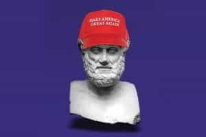
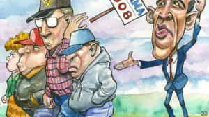

< < < Back
What The Trump Skeptics Got Wrong – Return Of Kings
There have been few true upsets in our history: Caesar crossing the Rubicon, Wellington’s victories at Assaye and Waterloo, and Washington’s victory at Yorktown over the most professional army in the world. It is often said that when General Charles O’Hara (who had the dubious distinction of surrendering to both George Washington and Napoleon Bonaparte) surrendered Cornwallis’s sword, the band played “The World Turned Upside Down.”
Today, the establishment and the intellectuals cannot help but share a similar sentiment as Cornwallis or O’Hara did at Yorktown. And I fully admit: In spite of my vote for Trump, I fully expected him to lose. The polls, his 60% negative approval rating, and the sheer forces of the media, the FBI and even some Republicans were arrayed against him.

My skepticism of Trump was not his ideas, but his chances of winning the election. Myself, and other conservative intellectual skeptics who voted for him, were wrong.
I am one of the intellectuals who expected a Trump defeat. I’ve been studying politics, history and economics for years, reading countless books on the matter from The Prince to Freakonomics to The Wealth of Nations.
And I was wrong. It was a Canadian housewife and an Iranian pickup artist who called it correctly for Trump. Trump beat the odds, he beat the intellectuals, and made the establishment “babies in the hands of a giant” as was said after Napoleon’s resounding victory at Austerlitz in 1806.
The left is currently in panic-mode in an attempt to explain how they lost. They are calling Trump supporters racist, sexists, homophobic and even sex offenders! But in the end, it was this same blindness that made them psychologically incapable of defeating Donald Trump.
Trump was immune to almost all conventional political weapons.
Trump won because of the following
1. The left seemed far more interested in calling Trump and his supporters racist than saying something of substance.
2. Outlets such as the New York Times did blatantly stupid crap like try to blame the NRA for the Orlando Shootings, and even tried to call them terrorists. In this, they beat even Trump in outrageousness: they thought the American people were stupid, so they just lied to them and said “fuck it, those peasants will believe anything we write.”
3. All Trump had to do was call them on their bullshit, and call them liars. And he was 100% right: the MSM has lied to the American people this entire election cycle. Subsequent to every terrorist attack perpetrated by a Muslim, the MSM continued to push the narrative that “home grown right-wing terrorism is the real problem.” Trump called them on their lies, and the American people, who are tired of being lied to by the MSM, cheered him on, even if he had a few issues with the truth himself.
4. The Democrats ran the absolute worst candidate possible. Hillary Clinton had negative approval ratings that rivaled Trump’s own. And she was bland. And she couldn’t decide if she was a moderate or a firebrand progressive. And she is corrupt, and lied about it, stupidly thinking the American people were too ignorant to understand that putting classified information on a private email server is a recklessly irresponsible thing to do.
5. Trump knew how to communicate with people. He knew that whites without a college degree were tired of being talked down to by progressives on the left and genuine intellectuals on the right (like myself). I freely admit I am guilty of this: when you study two thousand years of philosophy, economics and rhetoric (Cicero was particularly effective), it is sometimes frustrating when people don’t approach a situation in terms of axioms and proofs. The working class that built America go by what they feel in their gut, and often times, they are right.
All in all, the left failed because they failed to understand America. They bought into the idea that “Americans are stupid…haha!” Americans are not stupid: they may not be smart, but they sure as hell know when a liberal taking head is lying to them about now the NRA is basically the Taliban in an obviously biased hit piece.

Hillary took working class Americans for granted, and she lost. This should stand as a parallel for black Americans whom the Democrats also take for granted.
I am pleased that Donald Trump is now President-Elect. He wasn’t just a candidate, he was the anti-candidate. He did everything a politician should not do. He used vulgar language. He talked freely about his ideas. He made no pretense about being polite to those who are destroying America. He turned weaknesses (such as his spotty track record) into strengths that would have ended any other candidate’s campaign. He was the un-candidate America needed.
I have high hopes for Trump’s presidency. In spite of my tepid support, I see Trump as a President who can do a lot of good, and has the potential to do more good than any President of recent memory.
First, Trump spat in the face of PC culture and won. Just as Scott Walker took on the Unions in Wisconsin and cucked them by winning the recall election by getting more votes than he did in the previous election, Trump defeated the SJW’s. If Trump can keep this up, we can achieve a major strategic victory in the war against political correctness, and get back to a concept called “actually being correct.”
Secondly, Trump is an unapologetic nationalist. He loves America, and doesn’t give a damn if you think Howard Zinn’s A People’s History of the United States is a great book. The Department of Cultural Guilt that has infected schools in America teaches children to hate their own country. I look forward to seeing Trump abolish the practice of teaching children that the Founding Fathers were evil racists, the British Empire did nothing good for the world, and that America is the greatest evil the world has ever seen.
Lastly, Trump is the antithesis of everything the Social Justice Warriors stand for: a successful alpha male who tells people to go fuck themselves and still gets elected. I hope to see a rise in masculinity in America: studies have shown that testosterone levels are down among the American male population. This should rise under Trump, as men embrace their masculinity instead of hiding it for fear of being accused of sexual assault.
I was a Trump skeptic. I underestimated him. I didn’t disagree with him on much (perhaps maybe 20% of his platform), but I had little faith he could pull it off. And I was vocal about my concerns regarding his elect-ability. But like the liberals, I was wrong. And a Canadian housewife and a former pickup-artist-turned-conservative-philosopher were 100% right.
I recall something I told a fellow soldier while on a long, boring convoy operation in Iraq: “When a genius says something, others say ‘wow, that is way above my head.’ But when a true genius says something, others say ‘wow, why didn’t I think of that before?!” Trump is a true genius: he stated the obvious to the American people and made them believe he wanted to Make America Great Again (and I think he genuinely does). He didn’t use fancy graphs or focus groups: he spoke the truth, without political correctness.
And now he is President-Elect.
Read More: Wall Street, Hollywood, The Media And SJWs Fail To Stop Donald Trump From Becoming America’s Next President